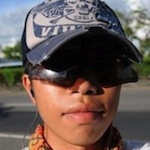

Jollen Chen
創辦人
Moko365 Inc.
Jollen(陳俊宏)，Moko365 創辦人、台灣與大陸知名的Linux與Android專家與講師，為Motorola、HTC、Foxconn、LG、OPPO、騰迅、廣達電腦、緯創、仁寶等超過50家企業提供相關教育訓練服務。閒暇時間熱愛旅行、閱讀與電影。
參與過眾多上市產品的開發，有Android瀏覽器與Webkit的量產實務經驗；也參與全球第一個開放源碼手機計畫。目前也和MagicLEGO協同推廣基於三星電子方案的多核心平臺。擁有二項與嵌入式系統有關的美國專利。現在則是將專案參與重心，轉向至策略規劃與架構設計。目前投注大部份時間於HTML5軟體開發工作，同時也在進行一些Startups新創事業計畫。

Hank Wang
共同創辦人
Mokoversity.com
Hank(王漢宏)，Moko365 Software Developer，同時也是 Mokoversity 的共同創辦人。熟悉 JavaScript、Node、Python 等技術，有 Android 與 iOS App 的開發經驗。長時間從事社群網站與 Social API 的開發。Mokoversity 是 Moko365 發展的一個線上課程平臺，未來將朝向 MOOC (Massive Open Online Course) 商業模式營運。
溫若婷
亞太區市場傳播資深經理
Opera 軟體公司
從事高科技產業市場行銷與媒體公關超過十年經驗，目前於Opera Software擔任亞太區市場行銷經理，經常往返印尼、印度、日本、馬來西亞、新加坡、台灣、越南等地與合作夥伴共同推廣Opera瀏覽器、行動廣告平台和網路標準技術。之前於奧美公關擔任經理，負責Autodesk、國科會、台灣網路資訊中心、三星電子、遠傳電信、蘇格蘭國際發展局等高科技產業，曾策劃廣告、公關以及線上等行銷活動。2006年畢業於美國南加州大學馬歇爾管理學院，獲得MBA碩士學位，主修國際企業。
黄明威 Willy
現任行政總裁
MTel Limted
黃明威先生，MTel Limted現任行政總裁，畢業與加拿大安大略省滑鐵盧大學數學系，憑藉逾10年數碼營銷行業經驗，致力於不斷發掘市場潛力，努力創造並傳遞品牌價值。黃先生在任期間，參與開發逾百個不同移動應用程式，領導其團隊獲得多個獎項，提升MTel Limted業內知名度，亦將公司業務及合作拓展至亞太區，奠定公司業界領先地位。
郭建甫 Jeff Kuo
走著瞧股份有限公司執行長
Gogolook CEO
郭博士曾就讀於成大工業設計學系，畢業於清華大學工業工程研究所，其專精領域為產品設計與使用者經驗研究。
工作經驗包括有：德國 Heinz Nixdorf Institute 研究員，先構技研(股)公司共同創辦人，安通國際(股)公司新事業發展總監等
Dr. Kuo graduated from Industrial Design at National Cheng Kung University and received his Ph.D degree in Industrial Engineering at National Tsing Hua University. His working experiences includes Researcher at Heinz Nixdorf Institute (Germany), Co-founder at PrefactorTech Co., Ltd, and New Business Director at Atona Inc.
Alex Lau有超過15年的Linux/Open Source開發經驗，近8年來從事中文軟體進階開發工作。針對Linux和行動產品設計，Alex設計出從硬體平台到雲端式解決方案的整體解決方案套件。他的目標是為最優秀的開發者提供一個管理平台，讓他們能夠在此平台上開發出市場上最棒的產品。
陳澤民 Brian Chen
Director
CoAsia Magic Lab
陳澤民（Brian Chen)博士目前任職於擎亞國際帶領Magic Lab研發團隊，與三星電子合作開發MagicLEGO多核心行動解決方案，同時透過MagicLEGO.org 與MOKO365協同推廣行動加值與系統整合技術課程，進以提升國內Android系統研發能量。 國立中正大學電機工程博士，創立探矽工作室、著有嵌入式系統相關書籍近十本，2000-2005年間成員利用業餘時間，積極投入國內開設ARM、Linux與嵌入式系統相關基礎與實務課程培養專才。他曾任職於資策會網路多媒體研究所，隨後服務於宏碁產品價值研發中心資深經理，帶領研發團隊開發Aspire One Linux、acer Liquid、acer Sync等產品，個人獲證技術創新專利近三十餘件。
劉士達為Arduino.TW開放硬體社群網站共同創辦人（另一位為林義翔），致力於推動開放硬體及Arduino平台，除提供Arduino相關解決方案，並協助許多藝術家及設計師利用Arduino完成極具創意之產品設計。同時也在學校及業界開設相關推廣課程。曾攻讀台灣大學資訊網路與多媒體所博士班，並在國立台北藝術大學科技藝術研究所取得碩士學位。
林義翔為Arduino.TW開放硬體社群網站共同創辦人（另一位為劉士達），致力於推動開放硬體及Arduino平台，除提供Arduino相關解決方案，並協助許多藝術家及設計師利用Arduino完成極具創意之產品設計。同時也在學校及業界開設相關推廣課程。曾攻讀中央大學資訊網路與學習所博士班，並在國立台北藝術大學科技藝術研究所取得碩士學位。
羅致宇先生自2005年起加入Opera Software的Unix團隊，2011年底開始負責Opera中國與歐朋瀏覽器產品的總體架構。在此之前，羅志宇先生在Opera總部挪威奧斯陸的工程部門，參與摩托羅拉、三星等多個平台的重要項目研發。2007年加入嵌入式核心團隊，負責全球Opera Mobile核心渲染引擎模型研發。
Tad Sekineh
Executive Director
OESF Global L.L.C.
Masahito Kawamori
Vice-chair
ITU-T Focus Group
Masahito Kawamori is a senior research engineer of NTT. His major interests are in telecommunication/broadcasting convergence and broadband/mobile convergence. He is currently the vice-chair of ITU-T Focus Group on Audiovisual Media Accessibility. He is also the Working Group coordinator of the IPTV area (WG H). He has been involved in the development of a PVR-based broadcasting system, multimedia systems for mobile phones, and an IP-based broadcasting system, which has been in service for two years in Japan. He is currently developing a high-definition IPTV system for NGN. Masahito Kawamori is a co-leader of the WG6,"the middleware, application and content platforms", of ITU-T FG IPTV.
鄭鎧尹博士目前為 iKala 產品設計總監，負責產品設計以及產品策略之職務。其畢業於臺灣大學資訊網路與多媒體研究所，研究領域為人機互動介面設計(HCI, Human Computer Interaction)。其研究成果卓越, 曾獲得 MSRA Fellowship Award，亦曾於日本最頂尖的 UI 研究所 JST ERATO 以及微軟亞洲研究院從事過研究。其在 Cyberlink 工作期間曾擔任過RD/PM 職務；並同為臺灣知名共筆部落格 MMDays 的創辦人之一，也為台灣最有影響力的 HCI 部落格 UIUI 創辦人，並為台灣最具指標性 HCI workshop的OpenHCI共同創辦人。
阿修，李易修（Justin Lee），專注於互動設計與程式設計領域，他是台灣使用者經驗設計協會 (UiGathering) 創會成員，長期耕耘使用者經驗設計領域。最近幾年專注于 App 開發與 Titanium Mobile 平台的推廣。部落格網址為 http://www.lis186.com
專長於嵌入式系統裝置開發，曾協助國內多家系統整合業者導入Android自動化測試技術、參與多款嵌入式裝置開發案專案，包含：IPX、VoIP、Sun Thin Client、Android Heterogeneous O.S. Device等。並受邀擔任多場研討會講師。
Edward Pleet於福特汽車公司已經服務14年，曾擔任過與產品及商業開發有關的多個職位。目前擔任亞太、非洲與歐洲連接服務總監，並負責福特SYNC車輛健康報告，SiriusXM/HD電臺系統和福特全球電動車連接系統，包括全新的MyFord Mobile智能手機應用。Edward Pleet擁有West Virginia University機械工程學士學位及Purdue University碩士學位。他獲得多個專利並曾獲得ESD年度傑出年輕工程師獎。他同時還是四個孩子的父親，目前居住在上海。